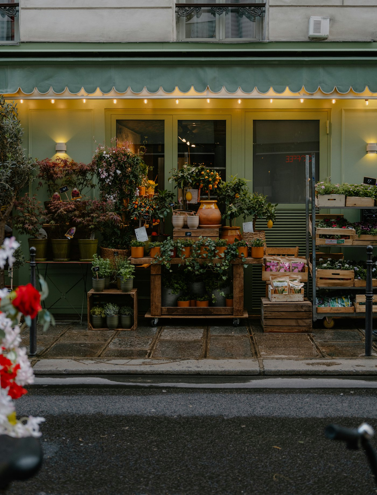

FUNABASHI · SINCE 1952
昭和27年から、
船橋の朝に花を。Flowers for Funabashi mornings, since 1952.
2026年7月で創業74年。お誕生日のお祝いから、イベント、供花まで。朝8時30分から開いている、船橋駅から1駅の町の花屋です。74 years in July 2026. Birthday bouquets, event flowers and funeral arrangements — a neighborhood florist one stop from Funabashi Station, open from 8:30 a.m.

BEFORE YOU ORDER
ご注文の前に、決めておくとスムーズなことWhat to decide before you call
用途を選んで、決まっていることにチェック。お電話でそのまま読み上げられるメモができます。Pick the occasion and tick what you already know — you’ll get a note you can read out on the phone.
お電話用メモPhone note
※ 花束は細かいご要望もお聞きします。地方発送も承ります。We’re happy to take detailed requests, and we ship nationwide.
SEASONAL LESSONS
季節のレッスンSeasonal lessons
これまでに開いてきたレッスンです。日程はInstagramでお知らせします。Lessons we’ve run before — dates are announced on Instagram.
春のアレンジSpring arrangement季節の花でつくるアレンジメント。An arrangement with spring flowers.
スワッグSwag吊るして飾る、束ねるだけの花飾り。A hanging bundle of flowers and greens.
クリスマスChristmasリースなど、冬のレッスン。Wreaths and other winter pieces.
ACCESS
船橋市・海神Kaijin, Funabashi
- 住所Address
- 〒273-0021 千葉県船橋市海神4-11-74-11-7 Kaijin, Funabashi, Chiba
- 営業時間Hours
- 8:30〜19:00（定休日はお店に確認して掲載）8:30–19:00 (days off to be confirmed)
- TEL / FAX
- 047-431-5374
- @hanacho1952
- 駐車場Parking
- 詳しくはInstagramのハイライト「駐車場のこと」へSee the “parking” highlight on Instagram
Googleマップ ★4.3Google Maps ★4.3